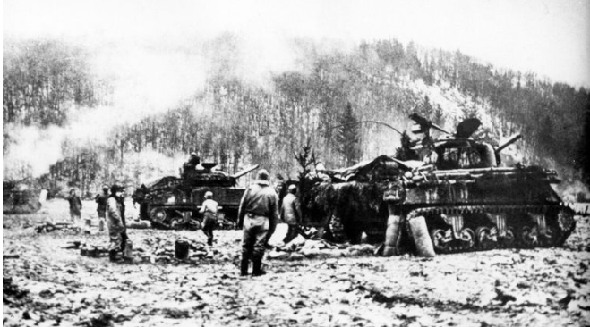

Résumé de la Bataille des Ardennes
La Bataille des Ardennes, également connue sous le nom d'Offensive des Ardennes, a été l'une des dernières grandes offensives allemandes sur le front occidental pendant la Seconde Guerre mondiale, se déroulant du 16 décembre 1944 au 25 janvier 1945.
- Contexte : L'Allemagne nazie cherchait à diviser les forces alliées et à capturer le port stratégique d'Anvers, afin de retourner le cours de la guerre en leur faveur.
- Déroulement :
- 16 décembre 1944 : Début de l'offensive allemande avec une attaque surprise à travers les Ardennes, prenant les Alliés au dépourvu.
- Décembre 1944 : Avancée allemande initiale, créant une "bosse" dans les lignes alliées.
- Janvier 1945 : Contre-offensive alliée, avec des renforts et une meilleure coordination, arrêtant et repoussant les forces allemandes.
- 25 janvier 1945 : Fin de la bataille, avec les forces allemandes en retraite et l'offensive alliée reprenant.
- Issue : Victoire des Alliés, infligeant de lourdes pertes aux forces allemandes et contribuant à l'effondrement final de l'Allemagne nazie.
- Importance : La Bataille des Ardennes a marqué la dernière grande offensive allemande sur le front occidental et a affaibli de manière significative les capacités militaires de l'Allemagne, ouvrant la voie à l'invasion de l'Allemagne par les Alliés.
